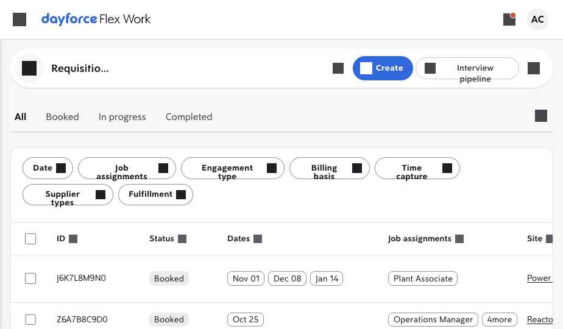
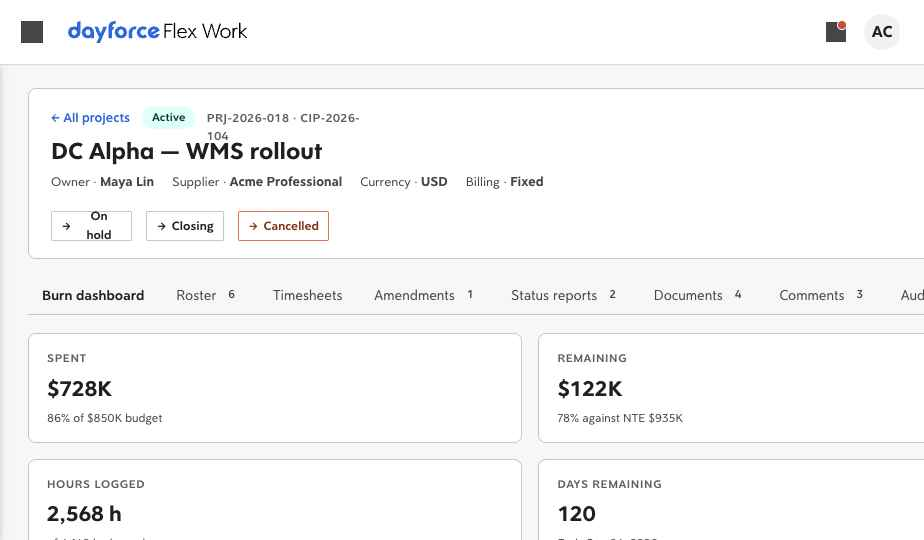
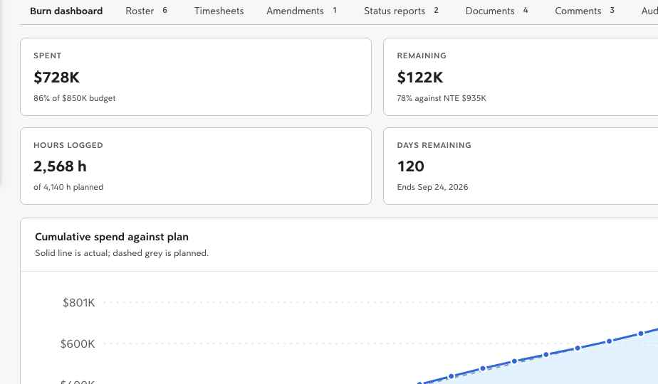

See the entire Project engagement flow in twelve minutes.
Six sections, all four roles. Start by flipping one engagement-type toggle; finish with a closed project archived to audit. Every step below names the page you land on, the click you make, and the surface that appears. The Helios Power Generation tenant seeds four sample projects so you don't need to create one from scratch — though the walkthrough's Manager section does walk through creation too.
Enable Project under Settings → Configuration.
Every Project surface across Admin, Manager, Agency, and Worker is gated behind one toggle. Helios ships with it on by default. Turning it off hides every surface listed below without breaking the rest of the app.
Confirm engProject is on
Settings → Configuration → Engagement types is the canonical home. Lives in pages/engagement-types-config.jsx.
-
Side nav →
SettingsOpen Settings.
From any page, open the global side nav and click Settings. The Settings dock appears.
-
Settings dock →
ConfigurationClick Configuration.
The Configuration page renders the standard left rail. Look for the Engagement types entry near the top.
-
Configuration →
Engagement typesConfirm the Project row is on.
The Engagement types card lists four rows: Shift, Assignment, Project, and Statement of Work. On Helios, Project is on by default; the toggle is green. On a fresh tenant, click the Project row toggle to enable.
The moment the toggle flips, the rest of this walkthrough's surfaces become reachable — no reload required.
What happens behind the scenes.pages/engagement-types-config.jsxwrites the flag toflexwork.engagementTypes.{orgId}.engProjectand dispatchesfeatureflags:change. Every downstream surface re-reads in place. -
Configuration left rail
Notice the new "Project settings" rail entry.
A new Project settings item appears in the left rail when
engProjectis on. That's the next stop, in §02.
Set the number sequence, approval matrix, burn alerts, and policies.
Helios ships with sensible defaults so the rest of the walkthrough works without touching anything here. But this is where the admin team customises how Projects behave for the tenant — nine sub-sections covering numbering, approvals, alerts, task catalog, closeout, supplier visibility, and per-role permissions.
Project settings panel
Lives in <ProjectAdminPanel /> from pages/project-engagement-views.jsx, mounted by pages/settings-config.jsx.
-
Configuration →
Project settingsOpen the Project settings card.
Click the Project settings rail item that appeared in §01. The full
ProjectAdminPanelrenders — one card with nine collapsible sub-sections, in order. The header carries a green "Live" pill confirming the engagement type is on. -
Project settings →
Section 02 · numberingConfirm the number sequence.
Three fields: Prefix (default
PRJ), Format (default{`{prefix}-{YYYY}-{####}`}), Next sequence (default27on Helios after the four seeded projects). A live preview shows the next ID that will mint.Toggle External ID required if you want Treasury / PMO IDs at intake; the validator dropdown picks
treasury-cip(theCIP-YYYY-###pattern Helios uses). -
Project settings →
Section 03 · approval matrixInspect the budget approval thresholds.
Four tiers, smallest first. Each tier has a "less than" budget amount and a chip-list of approvers. Helios defaults:
- T1 · budget < $50K → Project owner, Department head
- T2 · < $250K → +CFO
- T3 · < $1M → +CHRO
- T4 · above all → +CEO
The "Above all" tier always sits at the bottom and is non-numeric — it carries the global escalation.
-
Project settings →
Section 04 · amendmentsTune the change-order policy.
Three controls: Auto-approve up to (default
10%), Manager approve up to (default25%), Require justification (default on). The reason-code chip-list at the bottom carries five defaults (Scope add, Scope reduce, Date extension, Resource swap, Rate adjustment); add or remove freely.Any amendment whose
|deltaBudget| / project.budgetexceeds the manager threshold routes back through the budget approval tiers in Section 03. -
Project settings →
Section 05 · alertsConfirm burn-alert thresholds.
Three rows: 75% / Info / Project owner, 90% / Warning / + Department head, 100% / Critical / + Finance. Tweak the percentages, severity, and notify lists per row. The header toggle disables the entire alert pipeline without losing the configuration.
-
Project settings →
Section 06 · task catalogReview the task catalog.
Nine seeded chargeable task codes: Discovery, Design, Build, Test / QA, UAT support, Hypercare, Project mgmt, Training, Travel time. These are the list workers pick from at time entry. Travel time is the only non-billable default.
Add a row, edit a name, or toggle billable. Reusable across every Project on the tenant.
-
Project settings →
Section 07 · closeoutConfirm closeout preconditions.
Six toggles plus an "archive after" days field. Defaults: all timesheets approved (on), all invoices paid (on), milestones accepted (off — fires only on milestone billing), supplier acknowledge (on), send supplier survey (on), archive after 30 days. These drive the precondition checklist on the Manager's Closeout tab in §03.
-
Project settings →
Section 08 · supplier transparencyPick supplier burn visibility.
A three-value segmented control: Hidden, Summary (% consumed only, the Helios default), Full (budget, actuals, NTE proximity). Whatever you pick is honoured by the Agency card in §04 — switch to Full and the supplier sees a complete burn read-out; switch to Hidden and the burn block disappears entirely.
-
Project settings →
Section 09 · rolesInspect the role permissions matrix.
Five default Helios roles (Program owner, Project manager, Finance partner, Compliance, Site manager) across six capabilities (Create, Approve, Amend, Close, View burn, Swap workers). Site manager has nothing on by default; Program owner has everything on. Flip a cell and the affected role's surface updates on the next render.
Long-term direction. When the global Settings → Roles surface gains a Project sub-section, this matrix migrates there — for now it sits insideProjectAdminPanelso it ships in lockstep with the rest of Project config.
From budget intake to closeout sign-off.
The buyer side, end-to-end. Open one of Helios's seeded projects, run a burn dashboard read-out, swap a worker on the roster, submit an amendment, file a status report, and sign off the closeout. Or, if you'd rather start from scratch, the very last step creates a fresh project under the v0.86 intake fields.
Project detail body · eight tabs
Lives in <ProjectVariantBody /> from pages/project-engagement-views.jsx, registered with the unified detail router under channel "Project" + id prefix "PRJ-".
-
Side nav →
RequisitionsOpen the Requisitions list.
The list contains every requisition on the tenant, including the four seeded Project rows (IDs starting with
PRJ-2026-) merged in alongside the Shift requisitions.Requisitions list · with Project rows merged in
How Project rows land here.pages/project-engagement.jsxprojects its records intowindow.REQUISITIONSon load, so the existing list filters, pagination, and engagement-type chip-bar Just Work without any host-page edits. -
Requisitions →
PRJ-2026-018Open the seeded WMS rollout.
Click the DC Alpha — WMS rollout row. The unified detail router dispatches to
ProjectVariantBodyvia the variant registry (id prefixPRJ-). The detail page mounts with a project-flavoured header: Active state pill, project + external IDs, owner, supplier, currency, billing basis, and state-transition action buttons (On hold, Closing, Cancelled).Project detail · header + Burn dashboard stat cards
Four stat cards: Spent ($728K, 86% of $850K budget), Remaining ($122K, 78% against NTE $935K), Hours logged (2,568h of 4,140h planned), Days remaining (120, ending Sep 24).
-
Burn dashboard · scroll
Read the burn chart and phase outline.
Scroll down. The cumulative burn chart plots actual (solid blue) against planned (dashed grey) week by week, with the NTE level as a marker. Below it the phase outline shows the five phases (Discovery / Design / Build / Test & UAT / Hypercare) as horizontal bars timed against the project's total week count, each carrying its phase budget.
Burn dashboard · cumulative chart + phase strip
-
Detail tabs →
RosterManage the roster.
Six workers on the project. Each row carries: avatar + name, role, task code (live select — re-assign right there), allocation %, hours-to-date vs planned, progress bar, start · end dates, and Swap / End-date actions.
Roster tab · six workers, live task selectors, swap + end-date
Click Swap on any row. The
ResourceSwapModalopens with the worker pre-loaded, a reason-code select (sourced fromconfig.resourceSwap.reasonCodes), and an optional note to supplier. The same modal serves the Agency side too — thetenantRoleprop inverts the copy. -
Detail tabs →
Roster→Review supplier proposalReview a supplier team proposal (on the budget-pending project).
Switch to PRJ-2026-024 · Helios HQ — accessibility audit & remediation (state: Budget pending). On the Roster tab, the header carries an extra Review supplier proposal button because
project.teamProposal.submittedis set on this seed project.Click it. The
TeamProposalReviewModalopens listing each candidate (synthesised from the team shape: 1 UX lead, 2 Frontend devs) with name, role, allocation, planned hours, rate, fit chip, and a segmented Accept / Hold / Reject decision per row.Click Commit decisions. The audit log records "Team proposal reviewed · N accepted of M" — accepted candidates would land on the project roster in a production wiring.
-
Detail tabs →
TimesheetsApprove the weekly burn rollup.
Back on PRJ-2026-018. The Timesheets tab shows the trailing six weeks as a roll-up: hours, burn, variance vs plan, and state pill. The latest week is marked pending with an Approve button. Earlier weeks are already approved.
One sheet, all six workers. Approve once, every worker's individual time clears alongside it.
-
Detail tabs →
AmendmentsSubmit a change order.
The Amendments tab lists existing amendments as cards with their ID, reason, delta, justification, submitter, approver, and state pill. One amendment already exists on PRJ-2026-018: AMD-001 · Scope add · +$60K, approved by Renée Patel.
Click + Submit change order. The modal opens with a segmented control at the top: Budget / schedule delta (the default mode) and Phase budget reallocation (v0.88).
- Delta mode: pick a reason, set budget delta (positive to add, negative to release), schedule delta in weeks, justification. The routing chip at the bottom updates live as you type the delta — "Auto-approve" under 10%, "Manager approval" 10–25%, "Full re-approval" above 25%.
- Reallocation mode: pick a from-phase and to-phase, set the amount to move, optional justification. Auto-approves on submit because the total budget is unchanged — phase budgets shift accordingly, and an audit entry records the reallocation.
Behind the scenes. Each submission writes toproject.amendments[]and appends a row toproject.audit[]. The supplier sees pending amendments via the Agency card in §04, and individual workers see them on the Worker Updates tab in §05. -
Detail tabs →
Status reportsDraft and send a weekly status report.
Two seeded reports on PRJ-2026-018: the latest is a green-RAG draft dated week 20; the previous is an amber-RAG sent report dated week 19. Click + Draft new report and a fresh draft auto-populates from the current burn ledger, recent comments, and any open amendments.
The report carries four chip-list fields: Accomplishments, Risks, Next week, Recipients. Click Edit on a draft to tune any of them; Send flips state to sent, captures the send date and recipient list, and writes "Status report sent" to the audit log.
-
Detail tabs →
DocumentsBrowse the project documents.
Four seeded files: DC Alpha SOW v2.pdf, Kickoff deck.pdf, Risk register week 12.xlsx, UAT entry criteria.pdf. Each carries an uploader, date, and size. Click + Upload to add a stub document; the audit log captures the upload.
-
Detail tabs →
CommentsRead and post in the project thread.
Three seeded comments thread through PRJ-2026-018's late-April put-away discussion. Click into the composer at the bottom, post your own message — it lands instantly with your handle and date. Single thread per project; one source of truth for decisions that don't belong in email.
-
Detail tabs →
AuditRead the audit trail.
Append-only feed of every state change, budget change, roster change, amendment, status-report send, document upload, and comment. PRJ-2026-018 carries seven seeded entries from creation through the 75% burn alert. Newest entries surface at the top.
-
Detail tabs →
CloseoutWalk the two-party closeout checklist.
Switch to PRJ-2026-009 · Substation 12 (state: Closed) to see a fully-met checklist. On PRJ-2026-018 (state: Active), the same checklist surfaces with "Not met" pills next to each unmet precondition.
Preconditions read live from
config.closeout(set in §02): timesheets approved, invoices paid, milestones accepted (when applicable), supplier acknowledgement. Once all are met, the Sign off & close button enables and the next click flips the project to Closed, with an audit entry recording the manager sign-off. -
Requisitions →
+ CreateOr: create a fresh project from scratch.
If you'd rather not use one of the seeded projects, head back to Requisitions and click + Create. On the New Requisition page, the Engagement type picker sits as the first card; pick Project.
The
ProjectIntakeFieldscard appears beneath the picker: External ID (required when policy is on), Currency, Billing basis (Fixed or Milestone), Budget, NTE cushion (% above budget), NTE amount (auto-computed). Below the fields, a live "Routes to" line names the approval tier the budget falls into — pulled from the matrix you set in §02.On Review commit,
PSProjects.createProject()mints a newPRJ-{YYYY}-{####}ID using the configured number sequence, writes the record toflexwork.projects.v2.{orgId}, and re-injects it intowindow.REQUISITIONSso it appears in the list immediately.
The supplier side of the engagement.
Switch to the Agency role and the Requisitions list grows an Agency Projects card at the top. Pending team-proposal requests rank by due date; active projects show roster + burn (gated by the supplier-visibility policy from §02). Every action shares its underlying component with the Manager side via tenantRole — submitted change orders route through the same policy tiers, swap requests share the same reason-code list.
Agency Projects card
Lives in <AgencyProjectsTab /> from pages/project-engagement-views.jsx, mounted above the Requisitions list on agency tenants.
-
Header avatar →
Viewing as → AgencySwitch to the Agency role.
Open the avatar menu top-right and pick Viewing as · Agency. The app reloads under the Acme Professional supplier tenant. The next time the Requisitions list renders, an Agency Projects card appears above the standard table.
-
Requisitions · top card
Read the open team-proposal requests.
One pending proposal in the Helios seed: PRJ-2026-024 · Helios HQ accessibility audit, due 29 May, budget envelope $180K, team shape "1× UX lead · 50% · 260h plus 2× Frontend dev · 100% · 520h each". A "Team proposal due" pill marks the urgency.
-
Pending card →
Propose teamPropose three candidates against the team shape.
Click Propose team. The modal renders one row per (role × count) in the team shape — in this case three rows, each capturing candidate name, rate, and start date. Click Submit proposal to write
project.teamProposal.submittedwith today's date and append "Team proposal submitted · 3 candidates" to the project audit.The Manager side picks it up immediately via the Review supplier proposal button on their Roster tab (see §03).
-
Active projects list
Open an active project's card.
Below the pending card, the active projects list shows projects assigned to the supplier. Each card carries the state pill, project name + ID, start date, roster count, and (depending on the supplier-visibility policy from §02) a burn block.
- Hidden: burn block disappears entirely.
- Summary (Helios default): single line "X% of budget consumed".
- Full: progress bar with spent / budget / NTE values.
-
Active card footer →
Weekly time roll-upSubmit a consolidated weekly timesheet.
Click Weekly time roll-up. The
AgencyConsolidatedTimesheetmodal opens with a workers × days grid — one row per worker on the roster, columns Mon–Fri, plus a row total and a grand total in the footer. Type hours into each cell.Click Submit week (N h). The system fans out into per-worker timesheets and appends "Supplier submitted consolidated weekly time · N workers · H h total" to the audit. The Manager sees the burn shift in the next render.
-
Active card footer →
Submit amendmentRaise a supplier-initiated change order.
The
AgencyAmendmentModalis the supplier-side counterpart to the Manager's amendment form. Same fields (reason, budget delta, schedule delta, justification), routed through the same policy tiers. The routing chip explicitly says "Auto-route to buyer" / "Buyer manager review" / "Buyer full re-approval" so the supplier knows what to expect.Submit. The amendment lands in
project.amendments[]withsubmittedBy: "Agency"andstate: "pending"; the buyer reviews it on the Manager Amendments tab. -
Active card footer →
Resource swapPropose a worker swap with a reason code.
Clicking Resource swap opens the same
ResourceSwapModalthe Manager uses, but withtenantRole="supplier"— copy inverts ("Propose swap" instead of "Send to supplier"), and an extra Replacement candidate field appears (required by policy by default). Reason codes come from the org-level list set inconfig.resourceSwap.reasonCodes. -
Active card footer →
Closeout acknowledgeAcknowledge closeout (when the project is closing).
Visible only when the project state is Active or Closing and no supplier ack exists yet. The modal asks the supplier to confirm "no further billing claim" against the project. On submit,
project.supplierClosedgets stamped, the Manager's Closeout checklist flips its "Supplier acknowledgement" precondition to met, and if the project was already in Closing state it auto-transitions to Closed.Two-party closeout, one component. Both ManagerCloseoutTaband AgencyAgencyCloseoutModalread and write the same precondition checklist. Per Principle 08 of the Architecture Map: two-party flows share components.
The worker app, project-flavoured.
Switch to a worker on a Project roster and the mobile experience grows two things: a Project assignment banner on Home, and a Projects tile on More. The Projects screen has five tabs — Log time, Expenses, Scope, Updates, Info — carrying the worker through the engagement from acknowledgement through weekly time and expense capture to amendment acknowledgement at end-of-engagement.
Worker mobile · Projects panel
Lives in <WorkerProjectScreen /> from pages/project-engagement-views.jsx, mounted by pages/worker-mobile.jsx behind a "Projects" tile in the More screen and a home-tab banner.
-
Header avatar →
Viewing as → WorkerSwitch to a worker on a project roster.
The Helios seed maps a handful of workers to project rosters by first name. Switch to a worker like Maya, Marcus, or Nadia to see the Project surfaces light up.
-
Worker mobile · Home tab
Spot the Project assignment banner.
On the Home tab, above the Shift invites section, a blue banner appears with the pill "N project assignment(s)", the project name, and the worker's role. Tap it → you jump straight into the More tab and the Projects panel.
-
Worker mobile ·
More → ProjectsOpen the Projects panel.
Or tap the Projects tile directly from the More screen. The list shows every project this worker is rostered on, each card carrying state pill, project ID, name, the worker's role, allocation %, hours-to-date progress bar, and a "logged / planned" line.
-
Project list → tap a project
Land on the project detail with five tabs.
Tap any project to open
WorkerProjectDetail. The header carries the project ID, name, role, allocation, and supplier label. Five tabs sit below it: Log time, Expenses, Scope, Updates, Info. -
Detail →
Log timeEnter weekly hours per task code.
The Log time tab opens with a "N hours remaining" banner pulled from
plannedHours - hoursToDate. A weekly grid spans Mon–Fri across the first three billable task codes (Discovery / Design / Build by default). Type hours into each cell. The footer totals live as you type; tap Submit week.No budget dollars shown to the worker. The worker sees only their own hours, not the supplier-burn or budget figures. Whether the supplier sees those is a separate policy (§02 · Section 08). -
Detail →
ExpensesSubmit a phase-and-task-tagged expense.
The Expenses tab opens a mobile form: Category (Travel / Equipment / Meals / Lodging / Misc), Amount, Phase, Task, Description. Submit. The expense lands on
project.expenses[]with state pending, audit logged, and appears in the "My recent expenses" list below the form, tagged with the state pill.PRJ-2026-018 has three seeded expenses for Jian Ren, Marcus Bukenya, and Nadia El-Sayed — switch to one of those workers to see the recent-expenses list populated.
-
Detail →
ScopeAcknowledge the project scope.
The Scope tab shows the project summary, the full phase list with week ranges, and a checkbox: "I acknowledge I've read the scope and any compliance docs". Tap, then Submit acknowledgement. The acknowledgement gates first time entry in a production wiring.
-
Detail →
UpdatesAcknowledge a change-order update.
The Updates tab reads from
project.amendments[]and surfaces those that touch this worker's planned hours or end date. Each item carries the amendment title, delta, justification, submission date, and an Acknowledge button. On tap the row flips to "Acknowledged" — the worker has now consented to the new shape and can log time against it. -
Detail →
InfoReference card — managers, supplier lead, dates.
The Info tab is the worker's at-a-glance reference: project manager, supplier lead, the worker's own role and task code, allocation %, start & end dates. Useful when the worker needs to call out to either side.
Flip Project off and the surface disappears cleanly.
Closing the demo — or testing that the engagement type degrades gracefully — means flipping the toggle from §01 back off. Every Project surface across all four roles is gated; with the toggle off the prototype is byte-identical to the pre-Project ship.
Turn off engProject
Same path as §01 in reverse. No data is destroyed — flipping the toggle back on restores every surface and every seeded record.
-
Settings → Configuration →
Engagement typesToggle Project off.
Same card as §01. The toggle flips back to grey;
featureflags:changefires; every consumer re-resolves in place. -
All routes
Walk back through every surface.
The Configuration left rail loses its Project settings entry. The Requisitions list no longer carries the PRJ rows. The Agency Projects card disappears from the agency-side requisitions hub. The More screen on worker-mobile loses its Projects tile, and the Home banner stops rendering. The variant registry no longer routes PRJ-* ids to the Project body — though there are none in the list, so no detail-route attempt arises.
Storage is preserved. Project records still sit atflexwork.projects.v2.{orgId}; per-org config is still atflexwork.projectConfig.v2.{orgId}. Flipping the toggle back on resurfaces everything immediately.
A clean run of this walkthrough — toggle on, four roles, toggle back off — takes about twelve minutes and exercises 48 of the 53 surfaces in the Project Engagement Type Parity v0.1 task list. The two remaining open items (team-fill distribution mode and per-project compliance docs) are host-page extensions called out as future direction in the architecture map.